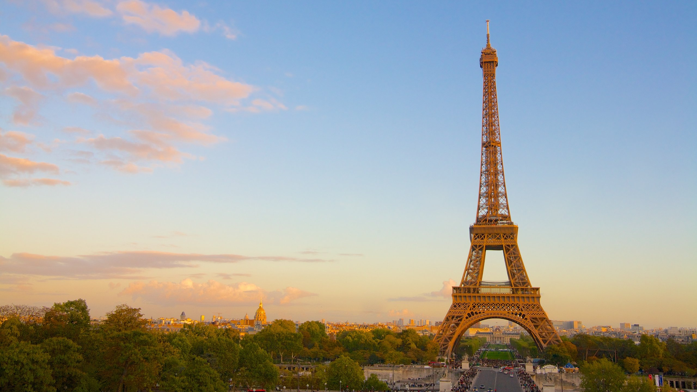

PARIS
Recibe millones de visitantes al año, que no se quieren perder la magia de la ciudad, sus monumentos, sus tiendas, sus espectáculos y con una vida cultural y social muy alejada de los cánones del centro de Europa.

EGIPTO
El principal turismo es el cultural, pues el principal atractivo del país es el impresionante patrimonio histórico-artístico del Antiguo Egipto

GRECIA
Hay otra razón por la que Grecia encanta a todos y es simple: a los griegos les encanta vivir, y su jovialidad les hace apreciar aún más las muchas atracciones de este maravilloso país.

MALDIVAS
Islas que parecen sacadas de una postal. Sus playas de arena blanca y fina, sus cristalinas aguas de color turquesa y los arrecifes coralinos que se encuentran bajo su superficie

BARCELONA
La capital cosmopolita de la región de Cataluña en España, conocida por su arte y arquitectura. La fantástica iglesia de la Sagrada Familia y otros hitos modernistas diseñados por Antoni Gaudí adornan la ciudad.

ROMA
Es una ciudad que atrae visitantes de todo el mundo gracias a sus impresionantes monumentos y restos arqueológicos procedentes de la Antigüedad

MACHU PICCHU
Es el sitio arqueológico inca más sobresaliente debido a su creativo diseño urbano, la belleza de su arquitectura y el fino trabajo en piedra de sus construcciones

SAN FRANCISCO
Uno de los centros culturales y financieros más activos. El puente Golden Gate es uno de los puntos más emblemáticos del mundo y una visita obligada en la ciudad.

LAS VEGAS
Las Vegas, en el desierto de Mojave de Nevada, es una ciudad turística famosa por su activa vida nocturna, que se centra en casinos abiertos las 24 horas del día y otras opciones de entretenimiento

RIO DE JANEIRO
Famosa por sus playas de Copacabana e Ipanema, la estatua del Cristo Redentor y el Pan de Azúcar. También es conocida por sus extensas favelas.

INDIA
Es muy conocida al mundo debido a su cultura y tradiciones ricas. Una cosa asombrosa es que en India la cultura y las tradiciones cambian con estados e incluso con ciudades y aldeas.

CHINA
Beijing, capital de China, es el destino turístico más popular de China todos los años, donde puedes obtener la máxima experiencia de la cultura y la historia de China.

MEXICO
Ofrece una amplia gama de opciones turísticas entre las que se encuentran los destinos de playa, sitios históricos, sitios de eco-aventura, deportes extremos; recorridos culturales.
NORUEGA
Con paisajes de montaña espectaculares, fiordos profundos, colinas boscosas y una extensa línea costera, es un destino ideal para los que buscan un paisaje natural extraordinario.

TAILANDIA
Es uno de los destinos más frecuentados del sudeste asiático. De hecho, Bangkok, la ciudad que nunca duerme, ha aparecido en rankings como la más visitada en la pasada década